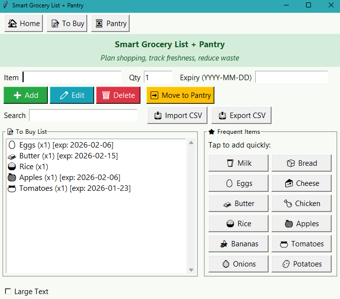
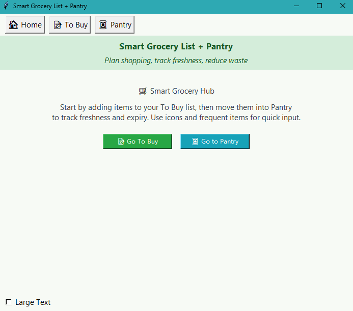
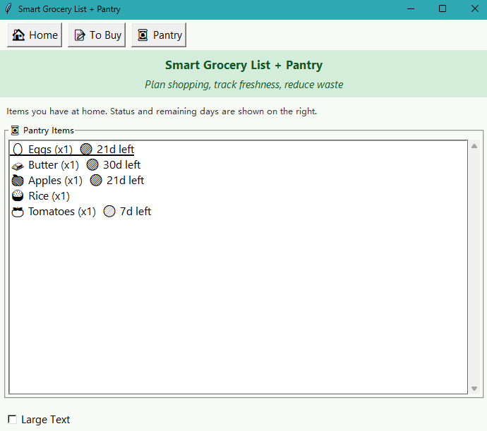

Smart Grocery List + Pantry
A Tkinter desktop app that helps people plan shopping, track pantry freshness, and avoid waste. The focus is a clear multi-view flow (Home → To Buy → Pantry), fast entry via icons, and guardrails for messy inputs.

Context / Problem
When shopping and pantry tracking happen in separate places (notes app, receipts, memory), it is easy to forget what to buy, lose track of what is at home, and miss expiry dates. I built a single flow that keeps planning and pantry status connected, without turning it into a heavy setup process.
Users & core tasks
- Add items quickly while planning (often in short bursts).
- Move purchased items into Pantry and see freshness / time-left at a glance.
- Edit quantities or expiry dates without losing the list structure.
- Import/export a list for reuse (CSV) and recover from mistakes.
Constraints / environment
- Desktop GUI constraints: window-based navigation and limited screen space.
- User input is messy (typos, blank fields, invalid dates), so the UI needs guardrails.
- State must stay consistent across views (To Buy ↔ Pantry) so users do not get lost.
Key interaction decisions
Clear navigation model
Home communicates the workflow first, then offers direct entry to To Buy / Pantry. The top nav keeps location obvious so users can switch views without a dead-end.
Fast entry with icons
Frequent items act like shortcut buttons. This reduces typing and keeps the interaction predictable when adding common groceries.
Feedback + error prevention
Input validation and message feedback prevent silent failures (invalid dates, missing item names). Edits and deletes are explicit actions to reduce accidental changes.
Screens


Outcome
A working desktop prototype with a stable Home → To Buy → Pantry flow, quick-add shortcuts, CSV import/export, and expiry tracking. The design goal was not “more features,” but fewer moments where the user has to stop and think about what the system expects.
What I learned
Even in a simple desktop tool, navigation and feedback states matter as much as visual layout. Clear guardrails (validation, consistent actions, predictable view changes) make the product feel calmer and more trustworthy.